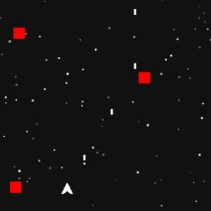
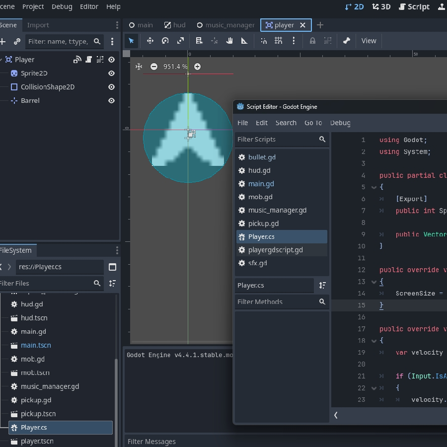
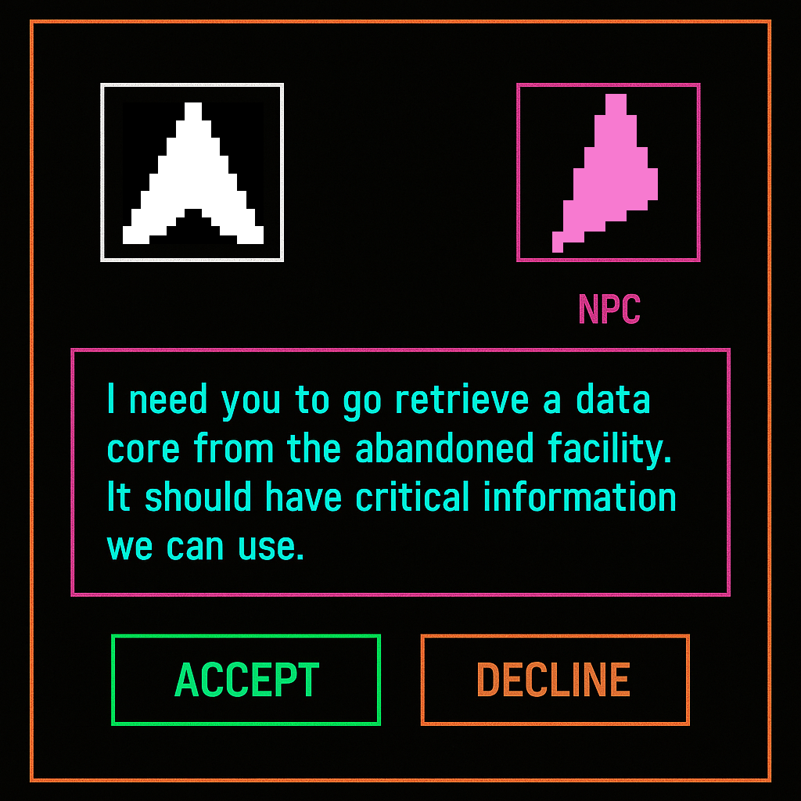
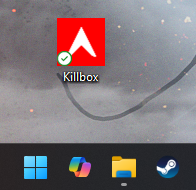

Welcome to KILLBOX
A self-taught game project developed originally in Godot.
The Concept
Killbox was originally created by me out of a desire to make a fun and engaging video game with some narrative, but without much artistic skill nor an art budget.
Initially, it seemed like an unusual direction to take for anything other than a quick throwaway arcade game. But then the indie game 'Void Sols' proved you don't need incredibly fancy visuals to create an interesting gaming experience.
All it takes are a few simple shapes to establish characters and environments. A little bit of visual trickery can create interesting illusions of speed, space and feedback. And with some clever writing, a whole world about simple pixellated shapes can come to life.

Original Development
In 2025, I developed an early concept for KILLBOX using Godot, written initially in 'GDScript' with follow-ups developed using C#. Individual projects were created independent of each other to lay out the groundwork of what I wanted the gameplay to look like.
One part was a bullet-hell top-down shooter where the player character flies through space and blasts incoming enemies.
The second part was a tactical top-down shooter with a slower pace in which the player infiltrates an enemy ship or stronghold, and clears the labrinthine layout one room at a time using a mixture of stealth, brute force and various gadgets.
The final part - not yet developed into a working state - was a visual novel style game where the player would explore a hideout and converse with allies and other characters to expand the game world and lore.
In the end, the idea was to develop a narratively interesting game with fun and engaging gameplay, but with minimal art and graphical fidelity so it wouldn't just run on every computer, but also so I could focus on coding and optomising the game itself rather than worry about visuals.

The Story
Far across the universe in a distant galaxy, a shape-war ravages geometric space. Under the Overlord’s rule, the squares lead a crusade of tessellating tyranny.
Some shapes make a stand against the Overlord’s armies of connective geometry, but it’s not enough. Soon all shapes will fall under the Overlord’s dominion of right angles.
The player stands as a bulwark against the Overlord’s crusade, and may be the last hope to securing equidistance for all shapes in geometric space.

The Future of KILLBOX
KILLBOX is going to see continued development as I practice programming, learn more techniques and technologies and overcome technical challenges.
Features I hope to learn about and implement in the future:
-
Varied Gameplay.
- Varied, skill-based gameplay ranging from bullet hell to tactical slow paced top down shooter with a visual novel style game for narrative progression.
-
Choices Matter.
- From the hub world the player is going to be able to choose side levels that boost progression, unlock new abilities and weapons and effect how narrative levels play out. Narrative levels can also be tackled from two or three different angles, offering variety on future playthroughs.
-
New Unique Enemies.
- From a variety of common enemies, from basic squares to sharp-shooting triangles to advanced boss enemies made up of multiple components that the player has to engage in phases. Each enemy is going to provide a unique challenge forcing the player to constantly adapt and overcome.
-
Upgrades and Powerups.
- In game score is converted into a currency called 'bits' that can be used to purchase character upgrades, powerups and more.
